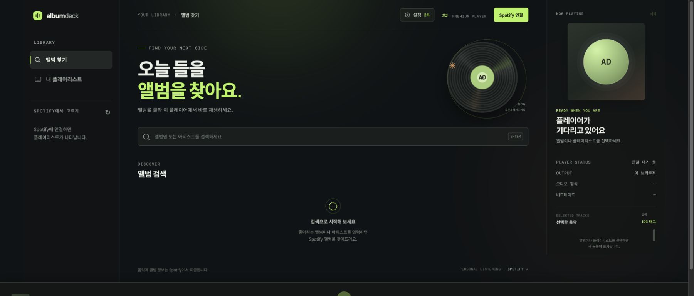
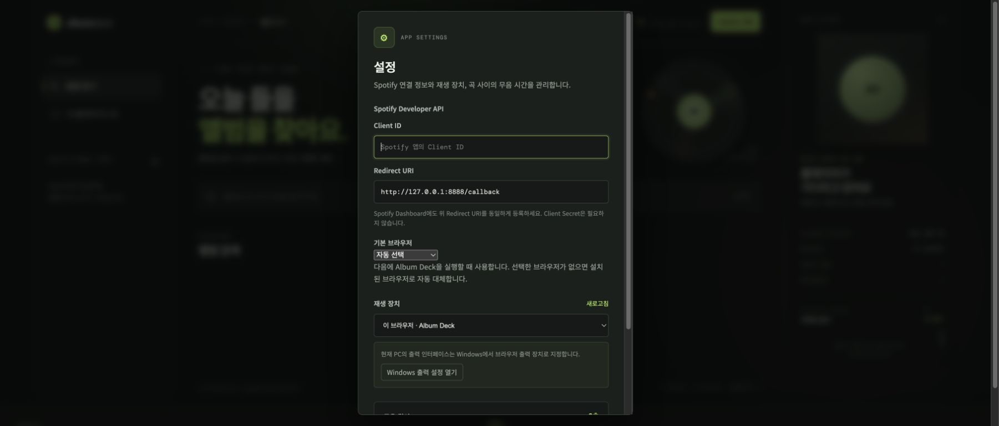

Album Deck
Album Deck is a personal Spotify web player designed for MiniDisc recording. It plays albums and playlists one track at a time and inserts a configurable silent gap between tracks. It does not download or save Spotify audio; Spotify Web Playback SDK and Web API calls run directly in the browser.

Features
- Search by album or artist and play a complete album in order
- Browse and play your Spotify playlists
- Insert 0–30 seconds of silence between tracks in 0.5-second steps
- Play through the Album Deck browser player or another Spotify Connect device
- Show platform-specific guidance for Windows per-app output and macOS system output
- Open the complete Korean or English guide from the in-app Help button
- Write Spotify metadata to ID3 tags in existing MP3 files
- Download tracks recorded on a MiniDisc over USB, then convert them to WAV and MP3, tag them, and sort them into album folders
- Switch the interface between Korean and English
- Run through the Windows installer, npm, Vercel, or a general Node.js host
Requirements
- Windows 10/11, macOS, or another environment that can run Node.js
- Node.js 20 or newer (the Windows release installer can install it automatically)
- A Spotify Premium account
- A Client ID from your own Spotify Developer app
- An audio cable between the PC and MiniDisc recorder when recording through an optical or analog output
If the Spotify app is in development mode, add every Spotify account that will use Album Deck to the app's user list in the Developer Dashboard. Album Deck never asks for or distributes a Client Secret.
Quick start with the Windows release ZIP
- Download the latest Windows release ZIP.
- Extract the entire ZIP into a new folder. Do not run the installer from inside the ZIP preview.
- Double-click
install-windows.cmdin the extracted folder. - If Node.js 20 or newer is missing, the installer uses Windows
wingetto install Node.js LTS. Allow the Windows permission prompt if one appears. - Start Album Deck from the desktop shortcut.
- Complete Create a Spotify Developer app and First-time Album Deck setup below once.
The app is installed in %LOCALAPPDATA%\Programs\AlbumDeck. The installer creates Album Deck shortcuts on the desktop and Start menu, plus Album Deck Stop in the Start menu for stopping the background server. The app window prefers Edge, then Chrome, and finally the system default browser.
If the installer reports that winget is unavailable, install App Installer from Microsoft Store or install Node.js 20 or newer manually, then run install-windows.cmd again.
Updating an existing installation
Extract the new release ZIP into a separate folder and run install-windows.cmd again. The installer stops the existing Album Deck server and updates the application files and shortcuts. Your Client ID, login session, output device, and silent-gap setting remain available when you use the same Windows user and browser profile.
Run on macOS
When you run the album-deck command on macOS, Album Deck opens Safari by default. You can choose an installed Chrome or Edge under Settings → Default browser. If the selected browser is unavailable, Album Deck falls back to Safari. Spotify Web Playback SDK supports desktop Safari.
Choose the device connected to the MD recorder under System Settings → Sound → Output. macOS applies this choice to the entire Mac rather than Safari alone. To route Safari to one device while other apps continue through the built-in speakers, use a per-application audio router such as SoundSource.
Create a Spotify Developer app
Album Deck needs your own Spotify Developer app for login and playback.
- Sign in to the Spotify Developer Dashboard.
- Select Create app and enter a name and description. For example, use
Album DeckandPersonal MiniDisc recording player. - Enter the following Redirect URI exactly:
http://127.0.0.1:8888/callback- Save the app with Web API and Web Playback SDK enabled.
- Copy the new app's Client ID. You do not need its Client Secret.
- If the app is in development mode and another Spotify account will sign in, add that account in the app's user-management settings.
Use 127.0.0.1, not localhost. The protocol, host, port, path, capitalization, and trailing slash must match the registered Redirect URI exactly. For a public deployment, register that HTTPS deployment URL followed by /callback as an additional Redirect URI.
First-time Album Deck setup
Start Album Deck from the desktop, or run npm start and open http://127.0.0.1:8888.
- Select Settings at the top of the app.
- Paste the Client ID copied from Spotify Dashboard into Client ID.
- Confirm that Redirect URI is
http://127.0.0.1:8888/callback. - Choose the browser Album Deck should use the next time it starts. Windows uses Edge or Chrome, while macOS uses Safari by default.
- Choose a playback device:
- This browser · Album Deck sends audio through the current PC. This is normally the correct choice for MD recording.
- Select another listed Spotify Connect device to play through that device.
- Set the silent gap. Track detection varies by recorder and connection, so begin with a 2–3 second test.
- Select Save.

Choose the interface language
Album Deck has Korean and English interfaces. On first launch it uses Korean when the browser language is Korean and English otherwise. Switch at any time with the EN / 한국어 button at the top of the app or under Settings → Language; the choice is remembered for the next launch. Help opens the guide in the selected language.
Album Deck stores these settings and the Spotify login token in the current browser's local storage. On a shared PC, use Spotify connected → Disconnect when you finish.
Connect Spotify
- Select Connect Spotify in the upper-right corner.
- Choose the Premium account on Spotify's login and authorization page.
- After authorization, Spotify returns you to Album Deck automatically.
- Confirm that the button changes to Spotify connected and your playlists appear.
To use another account, select Spotify connected → Use another account. If Spotify automatically selects the current account, use Not you? on the Spotify page.
The first login requests these scopes: streaming, user-read-private, user-read-email, user-read-playback-state, user-modify-playback-state, playlist-read-private, and playlist-read-collaborative.
Play an album or playlist
Select Help at the top of the app to open this guide inside Album Deck. Use English at the top of the guide to switch languages, or select Open in new window for a larger browser view.
Play an album
- Select Find albums in the left sidebar.
- Enter an album or artist name and press Enter.
- Select an album card in the results.
- Check the tracks and order under Selected tracks on the right.
- Playback starts from the first track. When a track finishes, Album Deck waits for the configured silent gap before starting the next track.
Play a playlist
- Select My playlists in the left sidebar.
- Select the desired playlist.
- Check the tracks and their order before recording.
Album Deck does not modify the original Spotify album or playlist. Unavailable tracks may be removed from the playback queue, so verify the actual track count displayed in Album Deck before recording.
The bottom player controls playback, previous and next track, seek position, and volume. AAC · 256 kbps describes Spotify's published web-player format; Album Deck does not measure the current stream. The app cannot inspect the actual format or bitrate on another Spotify Connect device and displays it as unavailable.
Record to MiniDisc
1. Check the connection and audio output
- Connect the PC's optical output or audio-interface output to the MiniDisc recorder input.
- In Album Deck, choose This browser · Album Deck under Settings → Playback device.
- On Windows, select Open Windows output settings and route Edge or Chrome to the audio device connected to the recorder.
- On macOS, choose the MD-connected device under System Settings → Sound → Output. This changes system-wide output; use a per-application audio router if Safari alone must use the device.
- Close other audio sources, or route notifications and other system audio to another output.
- Play a short test track and check the recorder's input level and left/right channels.
2. Test the silent gap
- Enable automatic track marking on the MD recorder.
- Start with a 2–3 second silent gap in Album Deck.
- Record two or three test tracks.
- Check that the recorder created one MD track for each song.
- Increase the gap if tracks are joined. If tracks split unexpectedly, check the recorder's track-mark setting and input level.
3. Make the recording
- Select an album or playlist in Album Deck and verify the track order on the right.
- Put the MD recorder into record-pause or recording-ready mode.
- Start recording on the MD recorder, then start the first track in Album Deck.
- Keep the Album Deck window open and prevent the PC from sleeping. The page detects track endings and starts each next track.
- After the final track finishes and Album Deck stops, stop the MD recorder.
- Check the MD track count, order, beginnings, and endings.
Spotify or network response time can add a little extra delay after the configured silent gap. Make a test recording with the same recorder and connection before an important recording session.
Write ID3 tags to MP3 files
This feature writes metadata from the selected Spotify album or playlist to MP3 files you already own. It does not save Spotify audio as MP3 files.
- Select an album or playlist first.
- Select ID3 tags above the track list on the right.
- Select Choose MP3 folder and choose the folder containing the files.
- Check the displayed MP3 file count and Spotify track count.
- Arrange filenames in natural numeric order (
01,02,03, and so on). Album Deck matches this order to the Spotify track order. - Select Write tags.
Album Deck writes the title, artist, album, original album track number, disc number, and release year when available. When tagging a playlist, it uses each song's position on its source album instead of its playlist position. A file is skipped when its duration differs from the Spotify track by more than 10 seconds. If the browser cannot write to the selected folder, it downloads a tagged copy instead of replacing the original. Test with copies of important files first.
Import MiniDisc recordings as MP3 files
Album Deck can download tracks recorded on a MiniDisc over USB, decode them to WAV, encode MP3 files, write ID3 tags, and save the results. MD access uses netmd-js and himd-js, the libraries behind Web MiniDisc Pro. Audio conversion uses ffmpeg.wasm.
Supported devices and browsers
| Media | Connection | Download support | | --- | --- | --- | | Standard MD (SP, LP2, LP4) | Connect NetMD device (WebUSB) | Sony MZ-RH1 / MZ-M200 only. Other NetMD devices can connect and list tracks, but download stays disabled. | | Hi-MD formatted disc (PCM, ATRAC3, ATRAC3plus, MP3) | Open Hi-MD drive (folder access) | Every Hi-MD device connected in Hi-MD mode that appears as a drive. |
- Use Chrome or Edge, which provide WebUSB and the File System Access API. Safari and Firefox are not supported.
- The first conversion downloads ffmpeg.wasm (about 30 MB) from jsDelivr, so an internet connection is required.
Import tracks
- Optionally select the Spotify album or playlist to use for tags. Without one, Album Deck uses the title, artist, album, and disc title stored on the MD.
- Select Import MD at the top of the app.
- For a standard MD, select Connect NetMD device and choose the device. For a Hi-MD disc, select Open Hi-MD drive and choose the drive root that contains the
HMDHIFIfolder. - Check the support status beside the device name. Tracks cannot be selected on an unsupported device.
- Check the tracks to download. As in Windows Explorer, clicking a track selects only that track, Ctrl+click adds or removes a track, and Shift+click selects the range from the last clicked track (Ctrl+Shift+click adds the range). In the list, Ctrl+A selects every track, and ↑/↓, Shift+↑/↓, Home/End, and Space also change the selection. A checkbox toggles one track; Shift+clicking a checkbox applies its new state to the whole range. The list at the right of each track selects the Spotify track used for its tags. Album Deck preselects a track with the same title or position; choose Use MD info to tag it from the MD title instead.
- Choose conversion options:
- Keep only the original length: after MP3 conversion, keep only the beginning of the recording, up to the matched Spotify track's length, to remove trailing silence. Tracks without a Spotify match, or MD tracks more than 45 seconds longer than the original, are not trimmed because the match is probably wrong.
- Separate folders by album: save each file in an
Artist - Albumsubfolder. When disabled, files go directly into the selected folder. - Also keep WAV files: keep the full-length decoded WAV beside the MP3.
- MP3 quality: 320/256/192 kbps CBR or VBR V0. MP3 tracks on Hi-MD discs are saved without re-encoding.
- Select Choose output folder, then Start download.
Files are named 01 Title.mp3; multi-disc albums add the disc number, as in 2-01 Title.mp3. Existing files with the same name are replaced. Keep the MD device connected and the window open until the transfer finishes.
Troubleshooting
Spotify connects but playback does not start
- Confirm that the account has Spotify Premium.
- Confirm that the login account is in the Developer app's user list.
- Check the Client ID and Redirect URI again.
- In a current Safari, Edge, or Chrome release, allow protected-content playback (EME).
- Start playback briefly in the Spotify app, then refresh the device list in Album Deck settings.
INVALID_CLIENT or Redirect URI error
- Make sure the Dashboard and Album Deck values match exactly.
- Use
http://127.0.0.1:8888/callbackfor local operation. localhost, a different port, different capitalization, or an extra trailing slash is treated as a different address.
Playlists do not appear
- Select the refresh button beside the playlist heading in the left sidebar.
- Confirm that private and collaborative playlist permissions were approved.
- Disconnect Spotify in Album Deck and connect again.
The MD recorder does not split tracks
- Increase the silent gap.
- Check automatic track marking or digital sync recording on the recorder.
- Make sure browser notifications or other system sounds do not enter the silent gap.
The MD device does not appear
- Open Album Deck at
http://127.0.0.1:8888in Chrome or Edge. - Connect a NetMD device holding a standard MD with Connect NetMD device, and a Hi-MD device holding a Hi-MD formatted disc with Open Hi-MD drive.
- Close other tabs or apps, such as Web MiniDisc, that are using the same device.
- If Windows still cannot find a NetMD device, it may need the WinUSB driver described in the Web MiniDisc instructions.
The server remains after the Album Deck window closes
Closing the Windows app window may leave the local server running for the next launch. Run Album Deck Stop from the Start menu to stop it.
Other ways to run Album Deck
Run from the repository
git clone https://github.com/YoungkyunKong/spotify-md-rec.git
cd spotify-md-rec
npm startOpen http://127.0.0.1:8888. Press Ctrl+C in the terminal to stop the server.
Install from npm
npm install --global album-deck
album-deckTo run it once without installing globally:
npx album-deckDeployment
Build the Windows release ZIP
npm run build:windows-zipThe command creates dist/album-deck-windows-v<version>.zip. The archive includes the app, installer scripts, Korean and English README files, and the screenshots under docs/images. It also generates 사용설명서.html and User-Guide.html from the corresponding README files, so release users receive the same instructions shown on GitHub. The archive excludes node_modules, .git, and development build caches.
Deploy to Vercel
- Import this GitHub repository as a new Vercel project.
- Keep the repository root as the Root Directory.
vercel.jsonconfigures Framework PresetOther, build commandnpm run build:vercel, and output directorypublic. - Note the stable production URL, such as
https://album-deck.vercel.app. - Add
https://your-production-domain/callbackto the Spotify app's Redirect URIs. - In the deployed Album Deck settings, save the same Redirect URI and your Client ID, then connect Spotify.
Set SPOTIFY_CLIENT_ID in Vercel to provide a default Client ID to new browsers. With a custom domain, set PUBLIC_URL=https://your-production-domain to provide a fixed Redirect URI default. Because Preview URLs can change on each deployment, test Spotify login on the registered stable production URL.
Deploy to Node.js or Render
Use Node.js 20 or newer, start command npm start, and health-check path /healthz. On Render, use the included render.yaml Blueprint or configure the service manually:
Runtime: Node
Build Command: npm install --omit=dev
Start Command: npm start
Health Check Path: /healthzOptional environment variables:
SPOTIFY_CLIENT_ID=your_spotify_client_id
PUBLIC_URL=https://your-production-domainA public deployment must use HTTPS. Register its exact /callback URL in Spotify Dashboard. Playback monitoring and silent-gap transitions run in the user's browser tab, so closing the tab also stops automatic track transitions.
Development and validation
npm run check
npm startThe MD import feature uses libraries in web/vendor/ generated from tools/md-lib. After updating netmd-js or himd-js, rebuild them with the command below. netmd-js and himd-js are licensed under GPL-2.0, and the ffmpeg.wasm core under GPL-2.0-or-later.
npm run build:md-libThe Node.js server only provides static files from web/ and public runtime configuration. The browser sends login, search, and playback requests directly to Spotify. Album Deck does not use a Client Secret.
Spotify supplies all music, artwork, and metadata. Album Deck only performs account authorization and browser playback; it does not download or save Spotify audio. See the Spotify Web Playback SDK, Spotify Redirect URI guide, and Spotify User Guidelines.